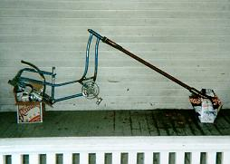

Chunk Works In Progress.Every rideable Chunk bike is in the "destructive testing" phase. Simply put, we ride them until they break, and if one lasts longer than most of the other bikes, we conclude that it was made well. Our lab also holds a few vehicles that are not yet rideable. |
One concept that we are working on is stretchification. A stretchified bicycle can either sprawl its pilot forward, or induce a backbreaking hunch.

The graceful Swan and Leadbelly are part of our efforts to create frames that can handle longer forks. The difficulty here lies in creating forks strong enough to handle the strain.
|
As we push the limits of possibility, we find that more time must be spent on sound design practices before assembly. We can't just throw them together like we used to and hope that they don't disintegrate. This image shows the Recumbo-Humper taking form. |
We also invest our research and destruction efforts into creating better butt-interface units.
(Return to C.H.U.N.K. Technical Documentation)
| Copyright 2003 Megulon Five <megulon5@dclxvi.org>. |
|
This work is licensed under a Creative Commons License. | Last modified 12 October 1998. |